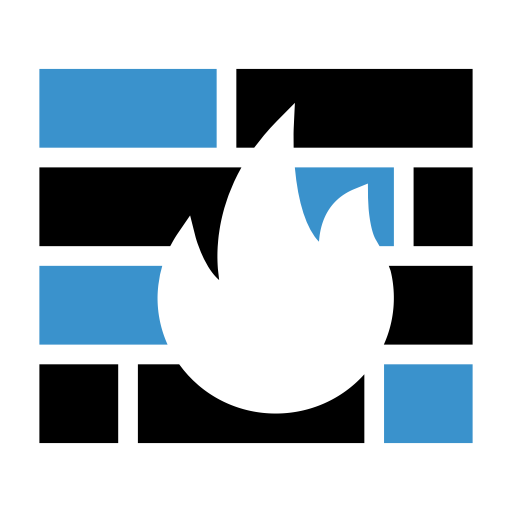

tema2-3aAnálisis del objetivoLos objetivos se consideran vulnerables luego de realizar la
exploración de puertos donde se puede determinar la arquitectura de su sistema operativo y extraer
información sobre sus vulnerabilidades.

Identificación de serviciosLos servicios de seguridad Informática brindan una opción al alcance
de las necesidades de cada empresa, para asegurar la integridad y la privacidad de los datos
pertenecientes a la misma.
Lo anterior contribuye a la determinación de protocolos de
comunicación entre los diferentes componentes de la organización (Base de datos, Administración y
plataforma de la organización).
Identificación de sistema operativoLa identificación del sistema operativo contribuye a la búsqueda de
"EXPLOIDS" que ya han sido empleados anteriormente sobre esa misma arquitectura y que exponen el fallo
nuevamente.
Actividad